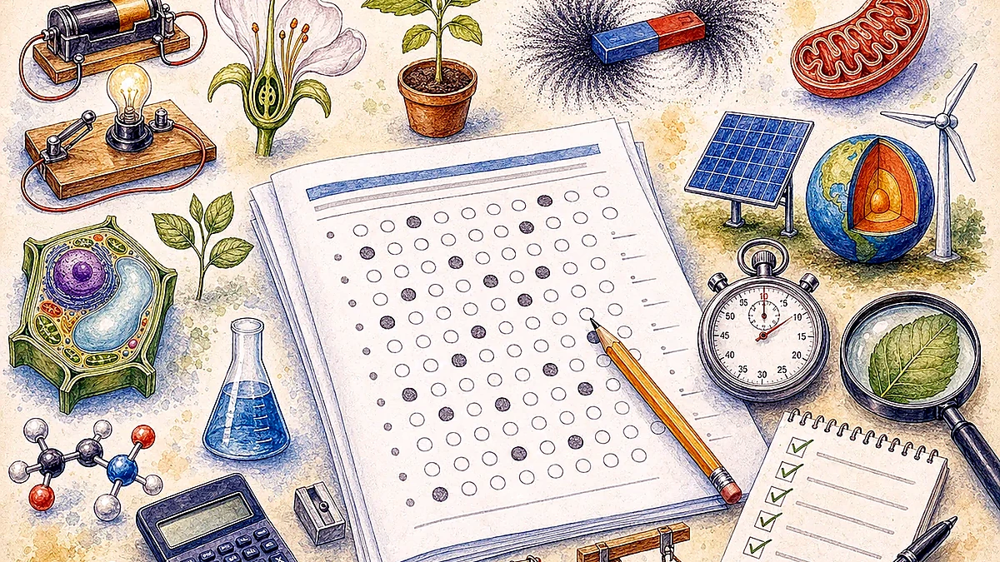
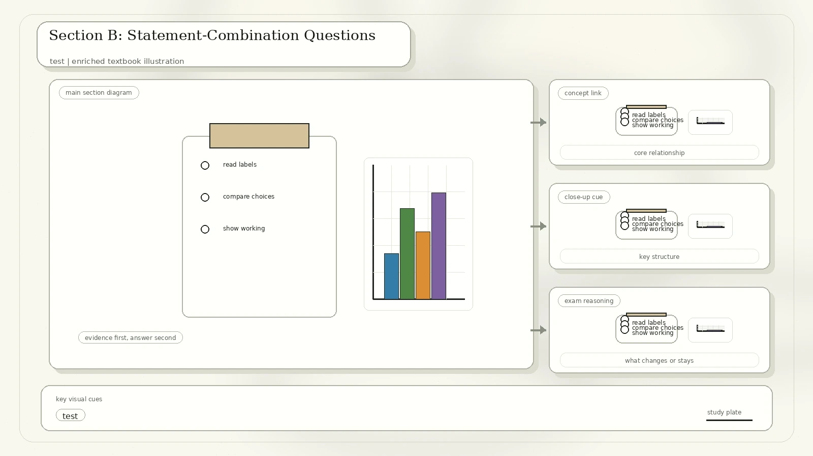

Paper Format
The examination time is 45 minutes. Section A has 15 one-mark multiple choice questions; Section B has 5 two-mark statement-combination questions.
Conversion note: this page summarizes the printed questions and reconstructs the answer key from the science and calculations. Handwritten ticks in the scan are treated as practice annotations.
Section A: One-Mark Questions

| No. | Clean Question From The Scan | Best Answer | Reason |
|---|---|---|---|
| 1 | Ocean-depth table: depth rises from 0 to 2000 m; temperature falls from 24 to 3 degrees C; pressure rises from 0 to 9 kb; dissolved oxygen falls from 23 to 6 mg/L. Which statement is incorrect? | D | Temperature does not increase as pressure increases; it decreases. |
| 2 | Baked Alaska: ice cream under cake and beaten egg white is baked but does not melt. Which explanation is best? | D | Air trapped in the egg white is a poor conductor and slows heat gain. |
| 3 | Objects I, II, III have masses 4 g, 6 g, 8 g and volumes 2 cm3, 6 cm3, 4 cm3. Which density statement is correct? | D | I and III both have density 2 g/cm3; II has 1 g/cm3. |
| 4 | Amylase solution is tested with Benedict's, Biuret, and iodine solution. What colours are obtained? | C | Amylase is a protein enzyme: Benedict's stays blue, Biuret turns purple, iodine remains brown without starch. |
| 5 | For vigorous activity, a peanut butter sandwich is suggested. Which produces more energy per gram, fat or carbohydrate? | A. Fat | Fat provides about 9 Calories per gram; carbohydrate provides about 4. |
| 6 | Which process does not release a gas that turns limewater cloudy? | D. Photosynthesis | Cloudy limewater indicates carbon dioxide. Photosynthesis consumes carbon dioxide. |
| 7 | The same force gives mass m1 acceleration a1 and mass m2 acceleration 2a1. If m1 and m2 are glued together, what is the acceleration? | B. 2/3 a1 | m2 is half of m1. Total mass is 1.5 m1, so acceleration is F/(1.5 m1) = 2/3 a1. |
| 8 | A point light source spreads light in all directions. At twice the distance, what happens to intensity? | B | Intensity follows inverse square behaviour, so it becomes four times dimmer. |
| 9 | Rusting occurs when iron reacts with oxygen in the presence of moisture. What type of reaction is it? | A. Synthesis reaction | Iron combines with oxygen and water to form rust. |
| 10 | On a speed-time graph, which labelled time period gives the longest distance? | D | Distance is area under the graph; the final triangular region has the largest area. |
| 11 | Two 1 kg masses hang over pulleys with a spring scale in the horizontal rope. What is the scale reading? | C. 9.8 N | The scale reads rope tension, not the sum of both weights. |
| 12 | Four unknown samples are tested with litmus, phenolphthalein, methyl red, and bromothymol blue. Rank lowest to highest pH. | B. B, C, A, D | B is most acidic, C is weakly acidic, A is near neutral, and D is basic. |
| 13 | Which two paper-clip rusting set-ups show that water is needed for iron to rust? | A. 1 and 2 | They compare dry air at 15 degrees C with tap water at 15 degrees C. |
| 14 | Fluorine is represented as 199F. What is the electron arrangement of fluoride ion? | C. 2, 8 | Fluorine gains one electron to complete its outer shell. |
| 15 | Water in a sealed conical flask near a window has air and water vapour above liquid water. What is occurring? | B. Evaporating and condensing | Liquid water evaporates; vapour can condense back in the sealed flask. |
Section B: Statement-Combination Questions
The source uses this option scheme: A = statements 1, 2, and 3; B = 1 and 2 only; C = 2 and 3 only; D = 1 only.

| No. | Question Focus | Best Answer | Explanation |
|---|---|---|---|
| 16 | Three cells are shown: a root hair cell, a sperm cell, and a red blood cell. Which are animal cells? | C | The sperm cell and red blood cell are animal cells; the root hair cell is plant. |
| 17 | Alcohol on skin feels cool: statements about heat absorption and evaporation. | C | Alcohol evaporation absorbs heat from skin, causing a cooling sensation. |
| 18 | Mixture of X and Y is separated by adding solvent Z, stirring, and filtering. X remains in the filter; Y is in solvent Z. | D | Y can be recovered by evaporating solvent Z. X is insoluble in Z and is recovered by filtration, not chromatography. |
| 19 | Astronauts on the Moon need helmet communication devices to talk. | A | Sound needs a medium, the Moon lacks atmosphere, and radio waves can travel through vacuum. |
| 20 | Emergency stop speed-time graph: deceleration, total distance, and slower initial speed. | A | Deceleration is 8 m/s2; total distance is 8 m + 16 m = 24 m; with the same braking conditions, slower speed gives shorter stopping time. |
Answer Key
D, D, D, C, A
D, B, B, A, D
C, B, A, C, B
C, C, D, A, A
How To Study This Mock
For ocean, density, and pH questions, write the trend or calculation before reading options.
Identify the variable being isolated: water in rusting, insulation in Baked Alaska, solubility in separation.
Use slope for acceleration and area under speed-time graphs for distance.
Redo questions 1, 7, 10, 12, and 20 after one day; they are the best calculation checks.